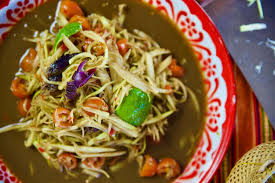
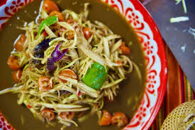

Papaya Salad
History
Papaya salad is very popular due to the Thai version but, it is a signature dish in the countries of Cambodia, Laos, Thailand, and Vietnam.
It's origins are believed to be from Laos especially because it's popularity is in the Northwest region of Thailand that borders Laos.
This recipe is a very simple yet traditional take on Papaya Salad,
making a flavorful, sweet, sour, spicy, and umami tasting dish.
Ingredients
- 1 whole green papaya
- 2 garlic cloves
- Thai chillies (to your liking)
- 2-3 long beans
- 3 tbsp of roasted peanuts
- 1 tbsp of small dried shrimp
- 2 tbsp fresh lime juice
- 1 tbsp of small dried shrimp
- 2 tbsp tamirind paste
- 1 1/2 tbsp fish sause
Instructions
- Wash your papaya
- Cut the skin off the papaya
- Shred the papaya
- Place the shredded papaya in a bowl
- Wash your green beans
- Cut green beans into 2 inch long pieces
- Place them with papaya
- Grab your mortar and pestle
- Put all ingredients in the mortar
- Press and grind until all of it is together
- Adjust ingerdients to taste if needed
- Mix papaya and sauce together
- Enjoy
 

Sources
Papaya Recipe
Papaya Origins